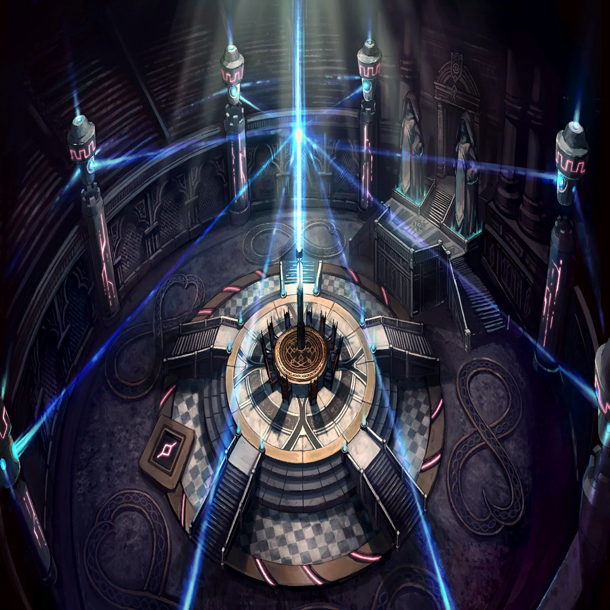

|
|  |

シャヘル |
そしてここが、我らの憩いの場です
以前、食事の時にお連れしましたね |
| リル |
うん、おぼえてる |
| オピネウス |
――何をしている、シャヘル |
シャヘル |
これはオピネウス様
城内で迷われていたリル様を、
お部屋に案内する途中なのです |
| オピネウス |
ほう…？ |
| リル |
…っ、あの… |
| オピネウス |
…諦めの悪さは、人に似たか |
| リル |
…え？ |
| オピネウス |
好きに散策するがいい
城を出ることは許可できぬが
城内であればどこに立ち入ってもよい |
| リル |
…………なん、で |
| オピネウス |
なんだ、不服か |
| リル |
なんでやさしく、するの。いまさら
わたしをコロすつもりだったんでしょ？ |
| オピネウス |
―――― |
| オピネウス |
節制と勤勉が消えた以上、
我が計画を阻む要因は消え去った
懸念はニドヘガルの生存だが… |
| オピネウス |
あれは己の限界を弁えた竜だ
どう足掻いたところで、
今の我が身を超える道理はない |
| オピネウス |
そしてそれは、貴様も同じことだ |
| リル |
もう敵じゃないから、やさしくする？ |
| オピネウス |
優しさを見せているつもりはない
ただ、無駄な犠牲だというだけだ |
| オピネウス |
人のように生きるというのなら
邪魔立てはしない。貴様はもとより
我が計画には存在しないもの |
| オピネウス |
俺が使い潰す“すべての竜”の中に
貴様の命は数えられていない |
| オピネウス |
創世の後をどう生きようと、
俺に咎める理由はないということだ |
| リル |
…でも、わたしのこれからに
ざふぃりすもしゅめいあもいない…
そんなの、そんなの… |
| オピネウス |
…壊した俺が言うのも筋違いだが |
| オピネウス |
死別は生命であれば当然の経験だ
どんな命も、
いずれ来る別れの為に生きている |
| オピネウス |
“その別れにどんな意味があったのか”
重要なのはその一点だ
あの二柱は貴様に一体、何を遺したのか |
| オピネウス |
それは貴様にしか見つけられない、
彼らが生きた証だろう |
| リル |
どんな、意味… |
| オピネウス |
…我々は進まねばならん
たとえ愛する者を失おうとも。いや―― |
| オピネウス |
“だからこそ”
未来は明るいのだと示す為に |
| リル |
………… |
| オピネウス |
連れて行け、シャヘル
この問答はその娘にはまだ毒のようだ |
シャヘル |
承知いたしました
さ、リル様。こちらへ |
| エサイ・イグナシオ |
今日はいやに饒舌だね？ |
| オピネウス |
失った者たちを思い出していた
この計画の為に散っていった、
すべての同志と敵たちを |
| エサイ・イグナシオ |
それは後悔かな？ |
| オピネウス |
無論、覚悟だとも |
| オピネウス |
我が竜体はザフィリスとシュメイアの
魂によって“完成”した
創世の礎として十分なマギルを有している |
| オピネウス |
あとは我らを
“この傲慢の層ごと”贄として、
ウロボロス無き正しき天地を創造する |
| エサイ・イグナシオ |
慈愛と寛容の二柱はどうするんだい？ |
| オピネウス |
いずれ来る
我が行い、
我が蛮行の是非を判ずる為にな |
| オピネウス |
その時が、奴らの最期だ |
| エサイ・イグナシオ |
それは、楽しみだね |
| オピネウス |
…賊か？ |
| エサイ・イグナシオ |
ああ
儀式の邪魔をされては困るだろう？ |
| オピネウス |
俺が出てもいいが―― |
| エサイ・イグナシオ |
それでは創世が遅れてしまう
ここは私に任せてくれ |
| オピネウス |
…よかろう
賊の対処は貴様に一任する |
| オピネウス |
死ぬなよ
これまでの犠牲が無駄となる |
| エサイ・イグナシオ |
わかっているとも
大丈夫さ、君の竜界がある限り――
私のほうがここでは強い |
 |

ワギナオ |
よ――ッと |
ワギナオ |
カルネ、届くか？ |
| カルネ |
届かない。手、貸して |
ワギナオ |
ほら、捕まれ |
| カルネ |
上手く侵入できたね |
ワギナオ |
ああ、だがこの広さだ
リルを探すのは骨が折れるだろうな |
| カルネ |
クェンスたちもこっちに呼ぶ？ |
ワギナオ |
…できるのか？ |
| カルネ |
竜の通信装置を使えば
やったらこっちの位置バレるけど |
ワギナオ |
なら、最終手段だな
とりあえず俺たちだけで探そう |
| カルネ |
了解 |
|
ワギナオ |
………… |
| カルネ |
…ワギナオ、これ |
ワギナオ |
ああ。誘い込まれた |
| エサイ・イグナシオ |
よく気付いたね。というか、
そろそろこの手の奇襲も食傷気味かな？ |
| カルネ |
…エサイ・イグナシオ |
| エサイ・イグナシオ |
おや、憶えてくれていたのかい？
光栄だね、スナイパー |
ワギナオ |
（カルネ、クェンスたちに通信を） |
| カルネ |
（やってる
みんなが来るまで、時間稼がないとね） |
| エサイ・イグナシオ |
何やら相談事かな？
だが安心してくれ、
すぐにそんな必要はなくなる |
| エサイ・イグナシオ |
――ここから先の舞台の主役は
もう指名が入っていてね
君たちにはここでご退場願おうか |
| ワギナオ・カルネ |
…ッ！ |
 |
| リザ |
――!?
私、は…！ |
| エナンジ |
起きたようだな、リザよ |
| リザ |
エナンジ…
貴女が私を…？ でもなぜ |
| エナンジ |
なに、うぬにはまだ役割があるのだ
この“夢”を終わりへ導く為の
一番大事な役目がな |
| エナンジ |
オピネウスの計画は
つつがなく進行しておるようだな
このまま進めば創世は成るであろう |
| エナンジ |
“だからどうした”という話だがな
所詮すべては夢幻。夢見で幸福を描いても、
現実は何も変わりはせぬ |
| リザ |
何を、言って… |
| エナンジ |
おっと、ただの独り言よ
気にする必要はないぞ？
聖女のなりそこない |
| エナンジ |
ただ、思うがままに振舞うがいい
うぬを選ばなかったオピネウスも
うぬを選ばせなかったイグナシオも |
| エナンジ |
どちらも許せぬというのなら――
その夢、砕いてしまうしかあるまいよ |